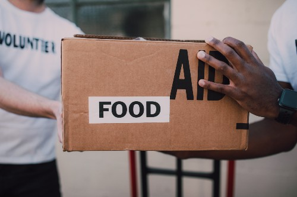

Local Food Bank
Currently, many towns throughout Idaho have been participating in local food banks. Everyone is encouraged to bring boxed and canned foods. This food will be donated to those who are in need. In addition to food, people are advised to donate gifts and toys. These gifts and toys will be given to children who are less fortunate around Christmas time. For more information regarding this, please contact the Weekly Whirlwind's office at 999-999-5555. The Weekly Whirlwind can also be contacted through email at contact@theweeklywhirlwind.info.